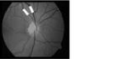
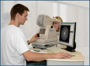
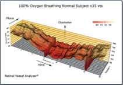
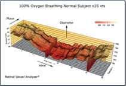
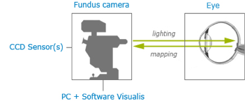
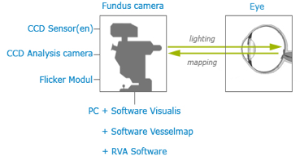
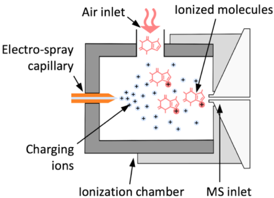
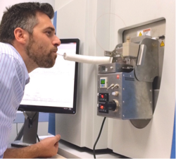

为中国定制的两项先进诊断技术
1. Background
Diagnostics always played a pivotal role in medicine: more precise diagnostics allow more effective treatment. At the Webpage of the Chinese National Development and Reform Commission (NDRC) we find this text: “We should strengthen cooperation with neighboring countries on epidemic information sharing, the exchange of prevention and treatment technologies and the training of medical professionals, and improve our capability to jointly address public health emergencies. We will provide medical assistance and emergency medical aid to relevant countries, and carry out practical cooperation in maternal and child health, disability rehabilitation, and major infectious diseases including AIDS, tuberculosis and malaria. We will also expand cooperation on traditional medicine.We should increase our cooperation in science and technology, establish joint labs (or research centers), international technology transfer centers and maritime cooperation centers, promote sci-tech personnel exchanges, cooperate in tackling key sci-tech problems, and work together to improve sci-tech innovation capability.”
The two diagnostic methods shown below - Retinal Micro Blood-Vessel Analysis and Chemical Breath Analysis - are unique in their sensitivity and early disease detection capability; these translate directly into better treatment options - and often also in the prevention of the disease altogether.
The two methods allow fast and accurate patient data collection and are well suited for screening of large numbers of people. Patients in risk groups can thus be tested frequently, and even slight changes in the condition can be quickly detected.
In order to improve the accuracy and specificity of the two methods, an enlarged data base of correlated patient samples is required; to this end, we will invite suitable Chinese medical research institutions to work with us in systematically building up this data base.
2. Retinal Micro Blood-Vessel Analysis
2.1. Introduction
The vasculature of the eye and the heart share several common characteristics. The easily accessible vessels of the eye are therefore—to some extent—a window to the heart. There is interplay between cardiovascular functions and risk factors, and the occurrence and progression of many eye diseases. In particular, arteriovenous nipping, narrowing of retinal arteries, and the dilatation of retinal veins are important signs of increased cardiovascular risk. The pressure in the dilated veins is often markedly increased due to a dysregulation of venous outflow from the eye. Besides such morphological criteria, functional alterations might be even more relevant and may play an important role in future diagnostics.(J. Flammer）2.2. The Science of Microvessel Analysis
The vasculature of the heart and retinal vessels share several common characteristics, and undergo similar changes during dysfunctional progression.[1][2][3] The retina offers a convenient site for the imaging and detection of microvascular changes over time. The underlying science of the micro blood vessel analysis of the retina is based on the observation that cardio-vascular problems and diseases are first seen in the micro vessels and only after a relatively long time also show up in the large vessels; when a cardio-vascular problem is detected in the micro vessels of the retina, but not yet in the large vessels, it is a predictive indication of increased vascular risk, and there is usually ample time left to initiate corrective measures to lessen or completely avoid the break-out of the disease.2.3. The History and Development of Microvessel Analysis
Micro Blood-Vessel Analysis has its roots in the USA and Europe, and has been further developed specifically in Germany and Switzerland.[4] Statistical research started 20 years ago in the USA by Larry Hubbard (Atherosclerosis Risk in Communities (ARIC) Study), where protocols have been developed for nonmydriatic fundus photography and for evaluation of retinal vascular abnormalities. The broad study showed risk factors for heart attack and inflammation of blood vessels. The ARIC study, and also the Rotterdam study, were two of many studies focusing on Micro Blood-Vessel Analysis.[5] [6] [7] [8] [9] [10]About 25 years ago, Dr. Walthard Vilser initiated Dynamic Vessel Analysis (DVA) at Friedrich-Schiller-University at Jena; Dr. Vilser then started his own company and began to manufacture high-precision optical equipment. Prof. J.Flammer used Dr. Vilser's equipment to compare venous blood pressure vs. arterial blood pressure in the micro-vessels of the eye; he combined retinal DVA (Dynamic Vessel Analysis) and retinal Venal analysis, and for the first time recognized the vascular cause of glaucoma.[2]
2.4. The Methods of Microvessel Analysis
Microvessel Analysis can be divided into two main segments: Static Micro Vessel Analysis (Figure 1), and Dynamic Micro Vessel Analysis (Figure 2).
Figure 1: Static Micro Vessel Analysis
 
 Figure 2: Dynamic Micro Vessel Analysis
Static Micro Vessel Analysis analyses the micro blood vessels of the retina statically, i.e. based on still images taken with a specialized camera, while Dynamic Micro Vessel Analysis analyses the micro blood vessels of the retina dynamically. In the dynamic vessel analysis, the vessel diameters are determined not only as a function of the place in an individual frame but in addition also continuously as a function of time in a live video. [11]
2.5. The Tools of Microvessel Analysis
The tools we propose are Imedos Retina Cameras: (Figure 3)(a) 
(b) 
Figure 3: Main components of the (a) Static and (b) Dynamic Vessel Analysis systems
2.6. The Maturity of Microvessel Analysis
Both static and dynamic micro blood vessel analysis have reached a level of maturity which today allows early diagnostics of cardio-vascular problems – many years (5-15) before the problems actually break out. Early-generation equipment is already on the market, but it is still mainly used in ophthalmology; only a few research institutes have begun to use the equipment for general cardiovascular analysis and disease prevention.3. Chemical Breath Analysis
3.1. Introduction
Breath analysis is the development of core technologies and methodologies for the safe, sensitive, fast and inexpensive analysis of exhaled breath. Breath analysis is a highly promising diagnostic tool that allows rapid monitoring of biochemical parameters in real time and in a non-invasive way. It therefore has the potential to simplify diagnosis and monitoring of various diseases, and may at some point replace analyses that are currently performed on blood or urine samples.3.1. Introduction
Breath analysis is the development of core technologies and methodologies for the safe, sensitive, fast and inexpensive analysis of exhaled breath.Breath analysis is a highly promising diagnostic tool that allows rapid monitoring of biochemical parameters in real time and in a non-invasive way. It therefore has the potential to simplify diagnosis and monitoring of various diseases, and may at some point replace analyses that are currently performed on blood or urine samples.
3.2. The Science of Chemical Breath Analysis
Sample preparation for diagnostic purposes directly from the lung may be difficult. But exhaled breath is a unique window to the internal metabolism of the body, which can be analyzed with very high sensitivity and selectivity. Mass spectrometry allows the highest accuracy for the determination of chemical compounds with very little sample consumption. In the 1970s, Linus Pauling´s study of exhaled breath using GC-MS (gas chromatography-mass spectrography) initiated the interest in breath analysis.[15] The underlying science of Chemical Breath Analysis is based on the observation that in each exhaled breath of a human and animal is a wealth of information in the form of chemicals; these chemicals are found usually only in minute quantities. With new equipment based on well-proven mass spectrography – but specifically developed for this purpose - minute quantities of a given chemical can be detected.3.3. The History of Chemical Breath Analysis
Detecting human disease by odor has a long history. From Hippocrates to Traditional Chinese Medicine to Lavoisier, and since ca. 10 years it is the object of intense studies at ETH Zurich.[16]There, the most sensitive instruments to date have been developed to analyze the chemical components of human breath.[17][18]19][20][21][22][23] Many researchers and institutes are trying very hard to develop breath diagnosis technology with the support of the US, European Union, Israel and so on. In 2015，the team coming from Israel Institute of Technology declared that they had developed a breath diagnosis technology named NoNose which could detect 17 diseases.[24]
3.4. The Methods of Chemical Breath Analysis
The breath of the patient/customer is exhaled into the entry tube of the aerosol ionizer under normal pressure; there the breath is ionized and passed on to the ultra-vacuum of the mass spectrograph. (Figure 4)
Figure 4: Schematic drawing of SESI ionizer

Figure 5: The aerosol ionizer interfaced with a mass spectrometer for the breath analysis
3.5. The Tools of Chemical Breath Analysis
The tools we propose to use for chemical breath analysis are aerosol ionizers by the ETH spin-off FIT. The Secondary Electro-Spray Ionization (SESI) manufactured by FIT uses an electrospray that produces a cloud of charging ions. These ions ionize the vapors that are in contact with the cloud. The charge transfer reactions are specific, very efficient, and very soft (no high energies involved). As a result, SESI enables:- a very high ionization efficiency,
- soft ionization of polar species with no fragmentation, and
- an instantaneous response.
3.6. The Maturity of Chemical Breath Analysis
Chemical Breath Analysis is still in its early stage of development. The equipment required to find minute quantities of a given molecule in the human breath exists today but is still very expensive and complex. Many problems still need to be solved, like the problem of the heavy molecules in the exhaled breath sticking to the instrument walls. The newly developed hardware can overcome the problem of ionizing aerosols and prepare them in a way suitable for most standard mass spectrographs; to analyze the vast amount of data resulting from each breath submitted to the ionizer, specific pattern recognition software was developed.4. References:
- McGeechan K, Liew G, Macaskill P, Irwig L, Klein R, Klein BE, et al. Meta-analysis: Retinal Vessel Caliber and Risk for Coronary Heart Disease. Ann Intern Med. (2009); 151:404-413.
- Flammer, J., Konieczka, K., Bruno, R. M., Virdis, A., Flammer, A. J., & Taddei, S.. The eye and the heart. European heart journal, (2013); 34(17), 1270-1278.
- Wang, J. J., Liew, G., Klein, R., Rochtchina, E., Knudtson, M. D., Klein, B. E., ... & Mitchell, P.. Retinal vessel diameter and cardiovascular mortality: pooled data analysis from two older populations. European heart journal, (2007); 28(16), 1984-1992
- Klein, R., Klein, B. E., Moss, S. E., Wong, T. Y., Hubbard, L., Cruickshanks, K. J., & Palta, M., The Relation of Retinal Vessel Caliber to the Incidence and Progression of Diabetic Retinopathy: XIX: The Wisconsin Epidemiologic Study of Diabetic Retinopathy. Archives of ophthalmology, (2004); 122(1), 76-83
- M. Kamran Ikram, Jacqueline C.M. Witteman, Johannes R. Vingerling, Monique M.B. Breteler, Albert Hofman and Paulus T.V.M. de Jong, Retinal vessel diameters and risk of hypertension: the Rotterdam Study. Digest of the World Core Medical Journals, (2006); 47(2):189-194
- Garhofer, G., Bek, T., Boehm, A. G., Gherghel, D., Grunwald, J., Jeppesen, P., ... & Nagel, E., Use of the retinal vessel analyzer in ocular blood flow research. Acta ophthalmologica, (2010); 88(7), 717-722.
- Sun C, Wang JJ, Mackey DA, Wong TY. Retinal vascular caliber: systemic, environmental, and genetic associations. Survey of Ophthalmology, (2009); 54(1):74
- Liew G1, Wang JJ., Retinal vascular signs: a window to the heart? Revista Espa De Cardiologia, (2011); 64(6):515-521
- Hanssen H, Nickel T, Drexel V, Hertel G, Emslander I, Sisic Z, Lorang D, Schuster T, Kotliar KE, Pressler A, Schmidt-Trucksäss A, Weis M, Halle M., Exercise-induced alterations of retinal vessel diameters and cardiovascular risk reduction in obesity, Atherosclerosis, (2011); 216(2):433-9
- Shalev I, Moffitt TE, Wong TY, Meier MH, Houts RM, Ding J, Cheung CY, Ikram MK, Caspi A, Poulton R., Retinal vessel caliber and lifelong neuropsychological functioning: retinal imaging as an investigative tool for cognitive epidemiology, Psychological Science, (2013); 24(7):1198–1207.
- http://www.imedos.de/index.php?id=93&L=1
- Flammer, J., Konieczka, K., & Flammer, A. J., The primary vascular dysregulation syndrome: implications for eye diseases. Epma j, (2013), 4(1), 14.
- Matthias C. Grieshaber, MD, FEBO, Maneli Mozaffarieh, MD, Josef Flammer, MD. What Is the Link Between Vascular Dysregulation and Glaucoma, Suvery of Ophthalmology, (2007), 52(6);144-154.
- Grieshaber, Matthias C; Flammer, Josef. Blood flow in glaucoma, Current Opinion in Ophthalmology: 16(2).
- Pauling L, Robinson AB, Teranishi R, Cary P., Quantitative analysis of urine vapor and breath by gas-liquid partition chromatography, (1971), Proceedings of the National Academy of Sciences, , 68(10):2374-6
- http://www.hochschulmedizin.uzh.ch/en/projekte/zurich-exhalomics.html
- Martinez-Lozano Sinues P, Kohler M, Zenobi R., Human breath analysis may support the existence of individual metabolic phenotypes. (2013), PLoS One, 8(4):e59909.
- Martinez-Lozano Sinues P, Tarokh L, Li X, Kohler M, Brown SA, Zenobi R, Dallmann R, Circadian variation of the human metabolome captured by real-time breath analysis. (2014), PLoS One,9(12):e114422.
- Martinez-Lozano Sinues P, Meier L, Berchtold C, Ivanov M, Sievi N, Camen G, Kohler M, Zenobi R, Breath analysis in real time by mass spectrometry in chronic obstructive pulmonary disease. (2014), Respiration, 87(4):301-10.
- García-Gómez D, Martínez-Lozano Sinues P, Barrios-Collado C, Vidal-de-Miguel G, Gaugg M, Zenobi R, Identification of 2-alkenals, 4-hydroxy-2-alkenals, and 4-hydroxy-2,6-alkadienals in exhaled breath condensate by UHPLC-HRMS and in breath by real-time HRMS, (2015), Analytical Chemistry, 87(5):3087-93.
- Li X, Martinez-Lozano Sinues P, Dallmann R, Bregy L, Hollmén M, Proulx S, Brown SA, Detmar M, Kohler M, Zenobi R, Drug Pharmacokinetics Determined by Real-Time Analysis of Mouse Breath. (2015), Angewandte Chemie, 54(27):7815.
- García-Gómez D, Bregy L, Barrios-Collado C, Vidal-de-Miguel G, Zenobi R, Real-Time High-Resolution Tandem Mass Spectrometry Identifies Furan Derivatives in Exhaled Breath, (2015), Analytical Chemistry, 87(13):6919-24.
- Gaugg MT, Gomez DG, Barrios-Collado C, Vidal-de-Miguel G, Kohler M, Zenobi R, Martinez-Lozano Sinues P, Expanding metabolite coverage of real-time breath analysis by coupling a universal secondary electrospray ionization source and high resolution mass spectrometry--a pilot study on tobacco smokers, (2016), Journal of Breath Research, 10(1):016010.
- Nakhleh, M. K., Amal, H., Jeries, R., Broza, Y. Y., Aboud, M., Gharra, A., Glass-Marmor, L., et al., Diagnosis and Classification of 17 Diseases from 1404 Subjects via Pattern Analysis of Exhaled Molecules. (2016), ACS nano, 11 (1), pp 112–125.